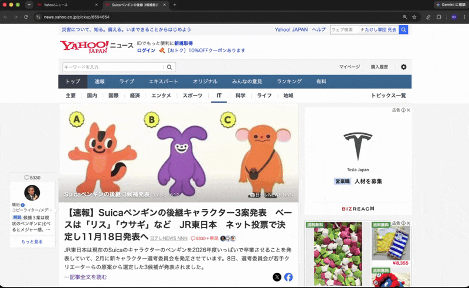
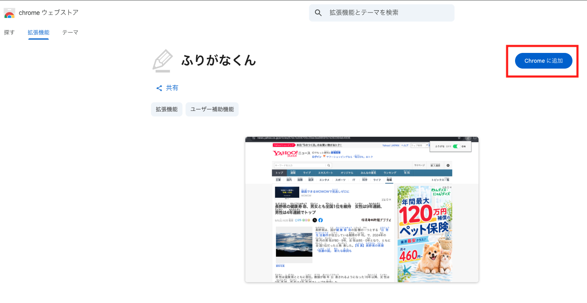
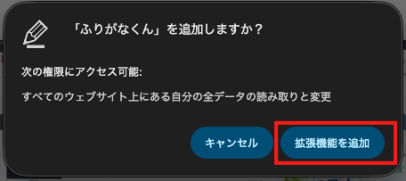
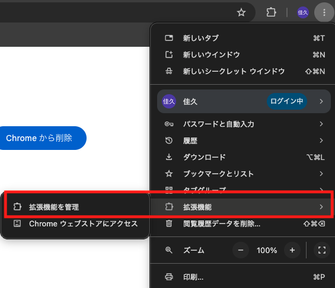
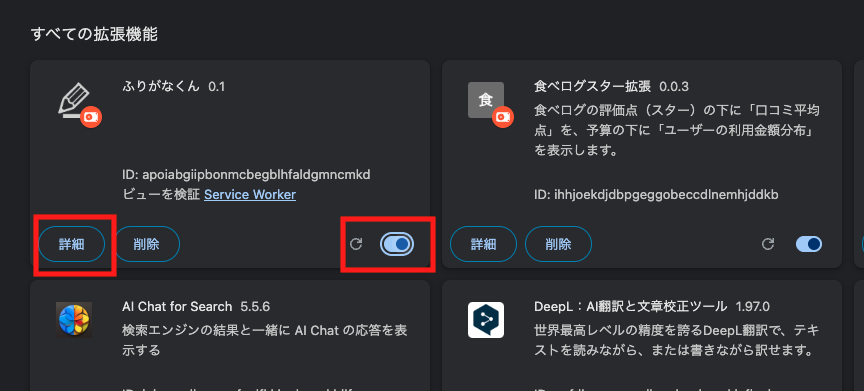
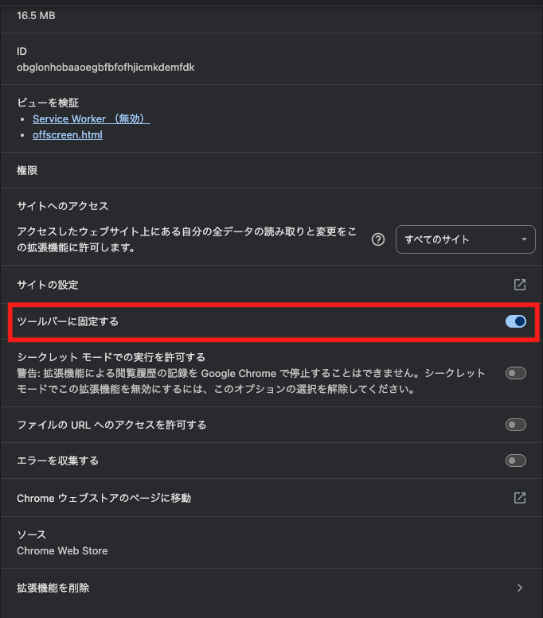
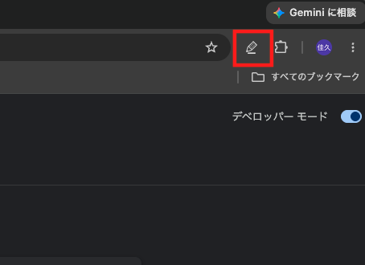
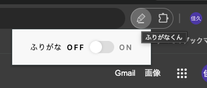

これは何？
chrome拡張機能として、日本語のwebページにふりがな（ルビ）をふる拡張機能『ふりがなくん』を開発・公開いたしました。
どんな感じで動く？
こんな感じです。
右上の「ふりがなOFF / ON」切り替えトグルからwebページ全体の文章にふりがなをつける・つけないの切り替えが可能です。ごくシンプルなインターフェースとしました。

導入の手順
- 「chromeウェブストア・ふりがなくん」ページの右上から「Chromeに追加」ボタンをクリックします。

- 『「ふりがなくん」を追加しますか？』メッセージの「拡張機能を追加」をクリックします。

- Chrome右上の「三点メニュー」→「拡張機能」→「拡張機能を管理」をクリックします。

- 「ふりがなくん」の右側のトグルボタンをONに変更、「詳細」ボタンをクリックします。

- 「サイトの設定」→「ツールバーに固定する」トグルをONにします。

- chrome右上に鉛筆マークが表示されることを確認します。

- 鉛筆マークをクリックすると、ふりがなのON, OFFを切り替えるボタンが表示されます。ONにすると、みているページにふりがなが振られます。

どんな人に使ってほしい？
以下のような人に使われることを想定しています。
- 日本語を学習中の方：小学生・中学生や外国からきてまだ日本語に慣れていない方
- 日本語を読むのが難しい方：識字困難（ディスレクシア・読み書きに障害）をかかえている方
なぜ作ったか？
ある日、テレビ番組『視点・論点』（NHK Eテレ）にて、元マネックス証券・松本大（おおき）さんが出演されていた『もっと社会に振り仮名を』という番組をみたのがきっかけでした。
松本さんは幼い頃から読書が好きでよく本を読んでいましたが、ふりがなに大いに助けられた、大人向けの書籍であっても積極的にふりがなを付与していくべきである、というような主張でした。そのなかで「一般財団法人 ルビ財団」を設立され、webページにふりがなをふるコードを作成する活動をされておられることも紹介されていました。
ん？ webページにふりがなをふるコード？ 当時私はなんとなく仕事で「形態素解析」という仕組みを触った経験があり、chrome拡張機能を開発したこともあったため、「それだったら自分で作ってみよう！」と開発に取り組み始めました。
技術情報
技術的な情報は、こちらのQiita記事: 『【個人開発】webページにふりがなをふる『ふりがなくん』を作ってみた』をご参照ください。